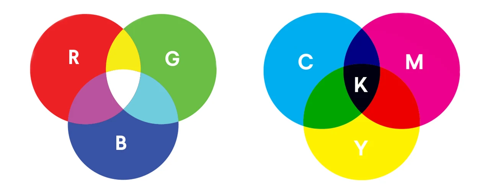

RGB-model
Bij het RGB-model spreek je van pixels in 3 verschillende kleuren:rood, groen en blauw. Iedere pixel bestaat uit die 3 lampjes. Door die lampjes feller of zwakker te laten branden, worden die kleuren gemengd met elkaar en dan kunnen er verschillende kleuren worden afgebeeld. Deze 3 lampjes zijn de basis voor alle kleuren. Om de kleuren weer te geven wordt gebruikt gemaakt van getallen. iedere kleur heeft een andere getallenreeks. het RGB-model wordt gebruikt op een zwarte achtergrond. Bij een zwarte achtergrond branden de lampjes niet. Door kleuren toe te voegen aan een zwarte achtergrond onstaan nieuwe kleuren. En als je gebruik maakt van alle kleuren, ontstaat er wit.
CMY-model
Bij een witte achtegrond, wordt er niet gebruik gemaakt van het RGB-model, maar wordt er gebruikt gemaakt van het CMY-model. Denk hierbij aan een printer, waarbij er een witte achtergond is. Bij dit model worden er kleuren toegevoegd aan een witte achtergond in plaats van een zwarte achtergrond. Daarnaast worden er ook 3 andere kleuren geberuikt. Deze kleuren zijn: cyaan, magenta en geel. Met deze kleuren kun je ook elke kleur maken buiten zwart om. Om zwart te creeëren wordt er zwart zelf nog aan toegevoegd. Zo ontstaat er dan het CMYK-model.
Uitleg filmpje
https://www.youtube.com/watch?v=wYz9fRjBvO4, Deze link leidt naar een kort uitlegfilmje over de 2 kleurmodellen, in dit filmpje wordt het goed en duidelijk uitgelegd wat beide kleurmodellen inhouden en worden de 2 kleurmodellen vergeleken.
